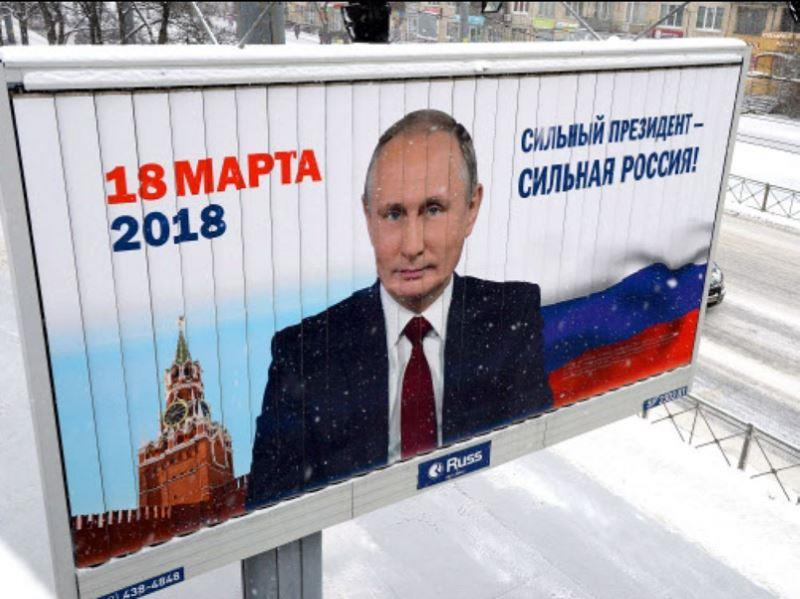
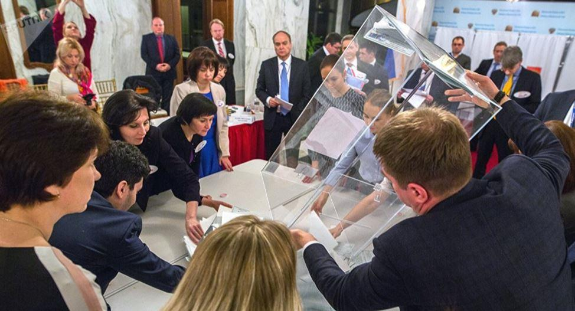
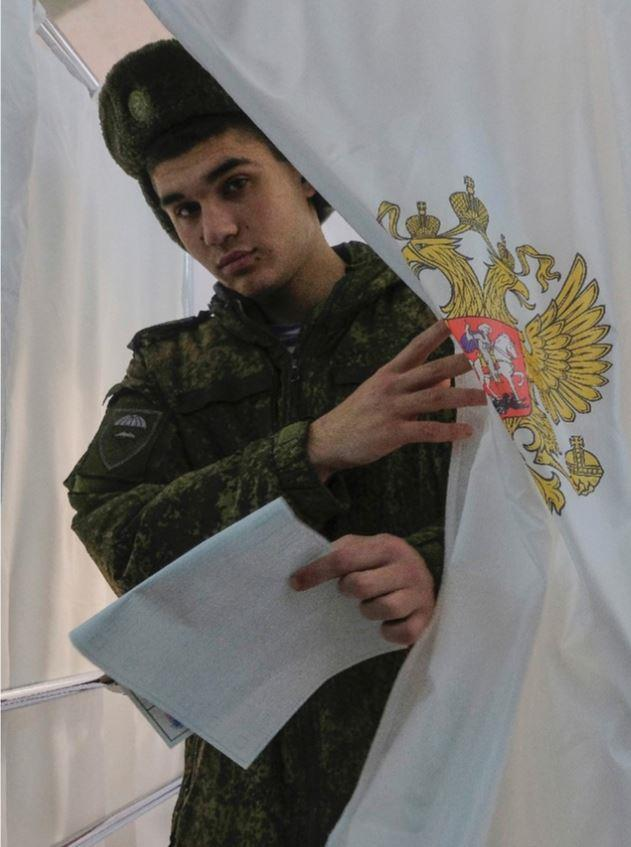

Poutine « indéboulonnable », Poutine réélu – « bourrage des urnes » ? Poutine « n’a pas encore battu le record de Kadhafi » en termes de longévité au pouvoir, Poutine, « garant d’un régime de plus en plus autoritaire », etc. Sans surprise, on en aura entendu de belles depuis quelques jours, avec, depuis le soir du 18 mars, des commentaires absolument spectaculaires qui se résument au simple fait que Poutine ne fait qu’usurper le pouvoir, qu’il piétine impunément les dernières chastes floraisons de démocratie écloses lors des années Eltsine, et que sa victoire, quand bien même ça en serait une au sens communément admis du terme, ne tient qu’à la nature clownesque de ses opposants. Aux griefs classiques, redondants et, en somme, ennuyeux, se surajoutent cette fois les détails fantasques de l’affaire Skripal et de sa fille (morts ? dans le coma ?) et du fameux Novichok dont les échantillons n’ont toujours pas été expédiés en Russie pour enquête conjointe. Bref, tout porte à croire que le chef du Kremlin n’est qu’un méchant tyran éliminant cyniquement ses adversaires et s’amusant, à ses heures perdues, à intoxiquer d’anciens agents doubles perdus dans les brouillards de l’Albion.
Pourtant, abstraction faite de tous ces cris d’orfraie, de tous ces doctes discours censés endormir le bon sens des masses, la question à poser est pourtant autrement plus simple qu’il n’y paraît : pourquoi les Russes votent-ils pour ce perfide personnage ? On leur propose une gentille Sobtchak, un Iavlinski connu du peuple depuis 1993, année où il créa son parti, on leur propose le descendant direct du PCS, Monsieur Groudinine, on leur propose l’extravagant Jirinovski qui n’est ni vraiment pour ni vraiment contre VVP, et eux, comme par enchantement, s’obstinent à élire quelqu’un qui réduit drastiquement leurs libertés, oppose la Russie à l’eldorado démocratique occidental et, de facto, ne fait rien pour débarrasser les Russes de sanctions qu’ils n’ont pas méritées.
Je reformule donc : les Russes, seraient-ils masochistes ?
Dans l’hypothèse où ils le seraient, je ne vois pas en quoi cela regarderait les Etats occidentaux. La pitié devrait succéder à la colère, rien de plus. Dans l’hypothèse, ô combien plus plausible du contraire, il faudrait peut-être se pencher sur les chiffres : des chiffres qui élucideront les 76,68 % que Poutine a décroché haut la main.
Primo, il semble qu’il y ait une confusion fatale et vicieuse parce que délibérée entre ce que pourrait être un régime démocratique dans un pays relativement petit, de tradition monoethnique et monoconfessionnel tel que la France, et l’exercice de la démocratie dans un pays traversé de 11 fuseaux horaires, multiethnique et multiconfessionnel tel que la Russie, avec, en prime, des chars de l’OTAN à ses frontières et un bouclier antissimile US dont la portée est très loin d’être seulement défensive. Par conséquent, ce que les dirigeants des puissances occidentales qualifient de « pouvoir autoritaire » est un pouvoir adéquat à la donne culturelle, géostratégique, de même qu’au contexte politique actuel. On ne dirige pas la Russie comme on dirigerait, mettons, la Belgique, ou le Danemark.
Secundo, une menace militaire tous azimuts pesant objectivement sur la Russie, comment ne pas faire confiance à un dirigeant qui s’est investi à plein pour sécuriser autant que cela se puisse des frontières fragilisées par les libéraux de l’équipe eltsinienne. La mise au point du Status-6 Oceanic (arme sous-marine capable de délivrer une ogive thermonucléaire de 100 mégatonnes), du RS-28 Sarmat (missile balistique intercontinental thermonucléaire), et du missile hypersonique Kinjal capable de contourner, à 10.000 km/h, le bouclier otanien, en est la preuve édifiante. On ne puit mener une politique intérieure saine dans un climat de menace externe constante. On ne puit protéger sa souveraineté autrement qu’à travers une remise à jour régulière de son industrie de défense. Les libéraux russes avaient désarmé la Russie. Poutine, dix-huit ans plus tard, achève son réarmement total, à tel point qu’en matière de systèmes d’armement, la Russie est en avance de quinze, voire vingt ans sur les USA.
Si les acquis sociaux laissent encore à désirer, et que la corruption gangrène encore trop les régions, les chiffres sont globalement favorables. Je pense, à cet égard, à l’excellente intervention de Jean-Pierre Thomas qui, dans sa réponse à Anthony Bellanger sur BFMTV, évoque des chiffres réels : sur le plan du pouvoir d’achat, la Russie est au 7ème rang dans le classement mondial (10ème pour la France), elle peut s’attendre, dans les prochains temps, à une croissance de 2 % (idem pour la France), son déficit public oscille entre 1 et 2 % (2,7 % pour la France), le taux de chômage est estimé à 5 % (10 % en France), son endettement est de 20 % du PIB (97 % en France). Comparaison n’est pas (toujours) raison, mais puisque ceux qui forgent l’opinion publique dans les pays occidentaux privilégient le raisonnement par analogie, pourquoi ne pas s’en imprégner ?
Enfin, il est très rare que la presse occidentale s’intéresse à l’arrière-plan psychologique de la réélection de Poutine. Hormis des experts de taille comme Hélène Carrère d’Encausse, Georges et Anne Nivat, en règle générale, la presse préfère éluder le sujet, ce qui constitue une grave omission. Poutine, quels que soient ses défauts, c’est celui qui a su redonner à la Russie sa fierté. Celui qui a su la tirer du chaos humiliant des années 90. Celui qui a su mettre fin à la campagne tchétchène, et placer à sa tête une personnalité contrôlable, seul facteur de stabilité envisageable dans cette région à l’équilibre extrêmement fragile. Celui qui a unifié les Russes autour de l’idéal patriotique et, plus récemment, celui qui a fait en sorte que le Crimée, menacée par Kiev, revienne rapidement dans le giron historique sans qu’une seule goutte de sang ne soit versée. C’est aussi celui qui a su tirer un bénéfice économique des sanctions infligées, et celui qui a montré au monde, à travers le dossier syrien, que la Russie pesait lourd sur l’échiquier international.
Bref, qu’on le veuille ou non, Poutine symbolise la renaissance russe. Sa resouverainisation si je puis me permettre le néologisme. Sobtchak, « l’opposante numéro 1 qui défie Poutine » titrent des journaux français : sérieusement ? Quelqu’un qui agite les lauriers de son illustre père en clamant, urbi et orbi, qu’elle n’a pas de programme ? Que « Moi, Présidente », je rendrai la Crimée à Kiev et le laisserai en découdre, une bonne fois pour toutes, avec les Républiques du Donbass ? VVP aurait évincé des opposants réels, entend-on ici et là ? Qui ? Navalny, encensé par des journalistes peu scrupuleux ? L’analyse des intentions de vote, en 2017, lui donnait dans les 2 %, comme elle accordait entre 1 et 2 % à Sobtchak, score confirmé dans la pratique. Mais sérieusement, vous voteriez pour quelqu’un qui prétendrait combattre la corruption en dissimulant l’existence d’une propriété de 3 millions d’euros à Evian- les-Bains ? Qui se produirait dans une pub appelant à « bouziller » du Tchétchène comme l’on bouzille les cafards et les moustiques ? (voir, à ce titre, l’article d’Olivier Berruyer, les Crises, « Navalny : l’invention du principal opposant politique russe »).
Que reste-t-il donc, au juste, des laïus atlantistes ? Doit-on absolument interdire à Poutine de se présenter dans le seul but de faire plaisir aux néo-libéraux US et à leurs acolytes européens ? Ou alors, faut-il pousser le peuple russe à changer de dirigeant rien que pour le changement ? Si la France avait aujourd’hui le général de Gaulle, qui oserait venir lui expliquer qu’elle devrait en changer à tout prix parce que le « changement, c’est maintenant » ?! Le 4ème mandat de Merkel ne choque personne. Mais quand il s’agit de Poutine…
Je rappellerai de même que tous les opposants russes ont joui du même temps de parole et d’antenne, cela, des mois déjà avant les élections. Que plus de 300 représentants étrangers ont été invités en tant qu’observateurs étrangers aux élections. Qu’enfin, permettez-moi cette remarque personnelle, mes connaissances libérales qui distribuaient des tweets fort contempteurs envers Poutine se portent tout aussi bien que ceux qui n’ont pas voté parce qu’ils avaient « la flemme », et que ceux qui ont voté parce qu’ils voulaient de Poutine ou parce que, à l’inverse, ils n’en voulaient pas.
J’en viens à me demander, aujourd’hui plus que jamais, si le messianisme néo-libéral s’en prend plutôt à VVP en personne ou à cette démocratie qu’il promeut à cor et à cri mais qui lui devient si répugnante quand elle dessert ses intérêts : combien, en France, auraient voté Fillon si celui-ci, ayant des chances réelles face à Macron, n’avait pas fait l’objet d’une odieuse campagne de dénigrement ? Rétrospectivement, combien de Français avaient voté contre la Constitution européenne ? Combien, aujourd’hui, votent contre l’entrée de niveaux flux migratoires dans leur pays ? Les écoute-t-on ? En Russie, une fois de plus, le démos a choisi. De quel droit lui en tient-on rigueur ?
Partager cette page